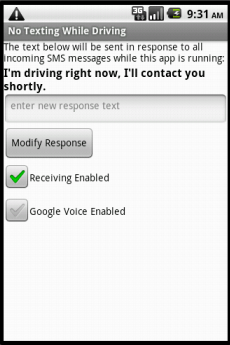
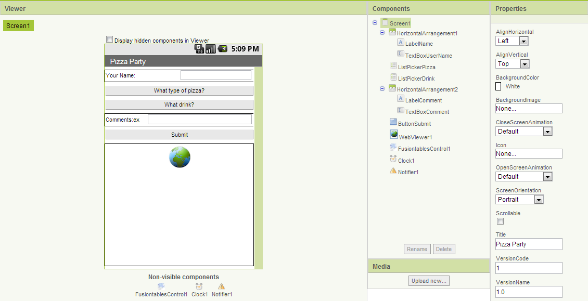
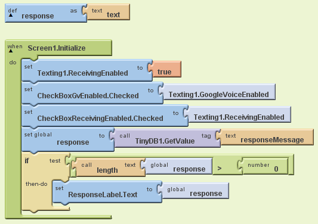
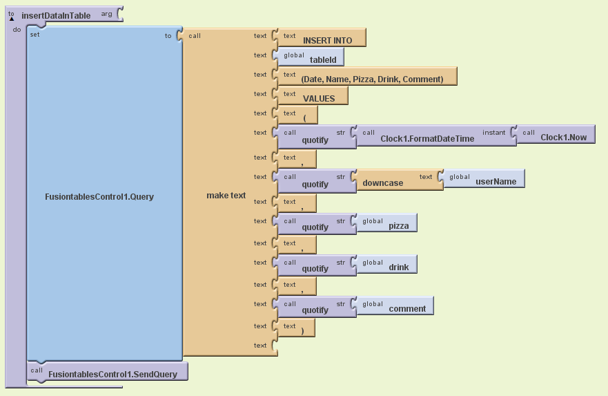
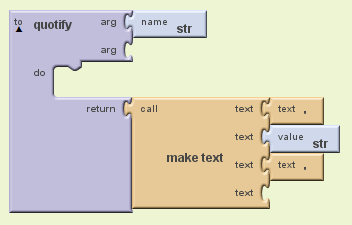
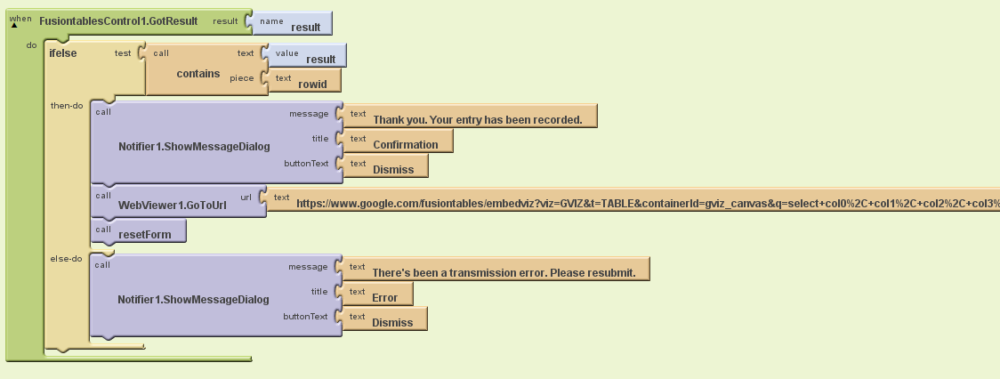
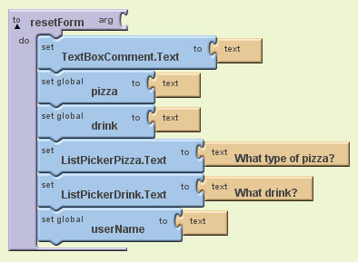

Pizza Party: Using Google Fusion Tables
This tutorial shows you how to use Google Fusion Tables to gather, share, and visualize data among a group. All of the data are stored in a public table that can be accessed via Google Drive, and allows different users* to add information to the tables. Coupled with a location sensor, an app could post periodic updates of each user's location to a public fusion table. Users could post notes to mark noteworthy locations, which may be useful for a team of researchers. For example, the app might be used by a team of botanists to create an annotated catalog of the trees (or some invasive plant) within a certain geographical area.
*Note: To share a FusionTable with others, you have to invite each person individually, the same way you would share a private google doc. There is no way to share write privileges to a FusionTable with the public. Public access is restricted to read-only.
In this simple app, you will create a Fusion Table to collect eating preferences for a pizza party. App users can input their eating preferences as well as any notes they have, including attendance, eating restrictions, or other special notes. Fusion Tables are ideal for this because the data are contained in one easy to access place!
This tutorial introduces:
- Using the FusionTables component
- Using a WebViewer component
This tutorial assumes you are familiar with the basics of App Inventor-- using the Component Designer to build a user interface, and using the Blocks Editor to specify the app's behavior. If you are not familiar with the basics, try stepping through some of the basic tutorials before continuing.
Here is the screen for the Pizza Party app with some stored values:

Before You Begin: Working with Fusion Tables
A Fusion Table is a Google service to support the gathering, managing, sharing, and visualizing of data. Data are stored in multiple tables on Google's cloud. Individual tables can be merged (or fused) if they contain a common column. and they can be easily visualized on maps and in various kinds of charts and graphs. In addition, they can easily be published to the Web.
To familiarize yourself with fusion tables, have a look around the Fusion Tables Web Site. Check out the example gallery to see what kinds of things are possible. Work through this Fusion Table tutorial, which shows how import some data, create a Fusion Table, and view the data on a map with your browser. You'll need to log in with your Google account.
Creating your own Fusion Tables
You will probably want to create your own Fusion Tables to experiment with as you are developing your apps. This is as easy as creating a Google document, if you are familiar with that process. Here are the steps:
- On the web, login to your Gmail account or any other Google service (e.g., Drive, YouTube).
- Select the More > Even more menu and scroll to the bottom of the page of Google services where you will find the Fusion Tables service.
- You may want to view some of the examples and work through a tutorial to learn the basics.
- If you wish to create a new table, go to Google Drive. Use the Create Button, go to More > Fusion Table. You will be given an option to create a new table, load a table from your Google Drive, or upload a table from your computer. For the purposes of this tutorial, select Create Empty Table.
- Edit the column names to something meaningful by going to Edit > Change Columns. In this tutorial, we are using 5 columns, named Date, Name, Pizza, Drink, and Comment.
- Click on the Share button (top right) to modify the table's permissions.
Getting an API Key
In order to use the FusiontablesControl Component you need to acquire a Google a Google Applications Programming Interface (API) key, an API Key. To get an API key, follow these instructions:
- Go to your Google APIs Console and login if necessary.
- Select the Services item from the menu on the left.
- Choose the Fusion Tables service from the list provided and turn it on.
- Go back to the main menu and select the API Access item.
Your API Key will be at the bottom of that pane in the section called "Simple API Access". You will provide your key as the value to the ApiKey property in all your Fusiontables apps.
Building the App
Connect to the App Inventor web site and start a new project. Name the new project PizzaParty, set the screen's orientation to Portrait and uncheck the Screen's scrollable property. You may also wish to set the Screen's Title property to something other than 'Screen 1'.
The User Interface
In addition to the FusiontablesControl component, the Pizza Party app makes use of several other types of components. It is assumed that you have learned how to use these in previous lessons. Use the component designer to create the interface for the Search Party. When completed, the designer should look like this:

The components are:
| Component Type | Palette Group | What you'll name it | Purpose of Component |
| Label | Basic | LabelName | Shows the text "Your Name:" |
| TextBox | Basic | TextBoxUserName | Gets input from user |
| ListPicker | Basic | ListPickerPizza | Accesses the list of available pizza flavors |
| ListPicker | Basic | ListPickerDrink | Accesses the list of available drinks. |
| Label | Basic | LabelComment | Shows the text "Comments:" |
| TextBox | Basic | TextBoxComments | Takes user input |
| Button | Basic | ButtonSubmit | Adds new data to the public fusion table |
| WebViewer | Not ready for prime time | WebViewer1 |
Displays Fusion Table Set the HomeUrl to FusionTable URL |
| FusiontablesControl | Not ready for prime time | FusiontablesControl1 | Manages interactions with the app's Fusion Table |
| Clock | Basic | Clock1 | Retrieves a timestamp each time a point is posted. |
| Notifier | Other stuff | Notifier1 | Notifies to user of any errors |
For all visible components, set their width property to Fill Parent. Set the WebViewer's height property to Fill Parent.
You must set the WebViewer HomeURL to point to the URL of your table. To find this URL::
Blocks Editor
Open the Blocks Editor so you can program the app's behavior. First, you will describe the app's variables. Variable whose names are ALL_CAPS are constants -- that is, variables whose values do not change during the program. Define the following variables and give them the initial values shown in the table.
| Variable Name | Initial Value | Purpose |
| TABLE_ID | Your table ID (e.g. 15_8EiexlH-gLbB4djRzC1fMWhSnbCKQcQNRwutU) | A default value to use for the table. |
| tableId | text | The current table's Id as input by the user. |
| timeStamp | text | Records the time at which the user responded. |
| UserName | text | Records the name of the user. |
| pizza | text | Stores the pizza choice input by the user. |
| drink | text | Stores the drink choice input by the user. |
| comment | text | Stores the comment input by the user. |
How to get the ID of your table: Each Fusion Table that you create will have a different Table ID. You can find this ID by opening your table, which can be accessed via Google Drive. The TableID can be seen in the navigation bar and is everything appearing after "docid=" in the URL
Initializing the App
It is important to perform some intialization steps whenever the app is restarted. These are done in the Screen1.Initialize block:

For this app we need to set the initial value of the tableId and we tell the app to forget the user's login credentials. This will force the user to login to their Google account and give permission to the app to access the Fusion Table. This authentication step will happen only once when the app first tries to access the Fusion Table. The Initialize block also called the resetForm procedure, which will be explained later.
List Picker Blocks
In the designer, you can set the choices for the pizza and drink types. Using ListPicker, the user can make their selection. This selection will be displayed on the user interface and stored in the pizza and drink variables.

Submitting Data
Once the user has input their name, food choices, and comments, they can select the Submit button. One clicked, the app tests to make sure all of the fields have values in them, and prompts the user to input all values if any are missing. If all values are present, it calls the procedure InsertDatainTable. The blocks for the ButtonSubmit.Click are shown here:

Inserting Points into the Fusion Table
The FusiontablesControl component is used to send the point to the Fusion Table. This action will create a new row in the Fusion Table, setting the values of the various columns involved. App Inventor makes this easy to do, but you have to be careful here that the insert query is formatted correctly.
This procedure involves two steps: (1) constructing the insert query and then (2) sending the query to Google's Fusion Table service. The query we want to send will take this format:
INSERT INTO
The words in CAPS are part of the query's syntax. The words in
INSERT INTO 191GHtZ_B2 (Name, Date) VALUES ('Sam', '10/10/2012')
To construct this kind of query we use App Inventor's make text block:

For this app, the column names must match the column names of the table we created earlier (with columns Date, Name, Pizza, Drink, Comment). Their respective values are taken from the procedure's global variables.
Note how we use the quotify procedure to place quotes around all of the values in the query:

Don't forget the FusiontablesControl.SendQuery command at the very end of this procedure. It's small in size compared to rest of the procedure, but very important.
Handling the Response from the Fusion Tables Service
The FusiontablesControl.GotResult event will be fired when the app receives a response from Google's Fusion Tables Service. For an insert query the service will return the rowId of the new row that was inserted or an error message if something went wrong. In this simple example, we check that the rowId was received and then just invoke the WebViewer.GotoUrl procedure, passing it the URL of the fusion table, which we found above. Simply setting the value of a Home page will cause the WebViewer to load and display that page.

Note that this set of blocks also calls the resetForm procedure. After recording an entry, it resets the interface back to the original state as shown here:

You're done! Package the app by going to Package for Phone on the Designer. You can now test the App for the purposes of the pizza party. Make new Fusion Tables and try to use the app to collect different data from users. Remember, you have to give each user permission to access the Fusion Table. You do this through the Google Fusion Tables interface, not through App Inventor.
Variations
Now that you have a simple app that uses fusion tables and a webviewer working, you might want to build some variations. For example:
- Include a LocationSensor so that the user's location can be added to the Fusion Table to create a map with notes
- Make the WebViewer display something other than the table of stored values; perhaps a map or a chart
Done with PizzaParty? Return to the other tutorials here.